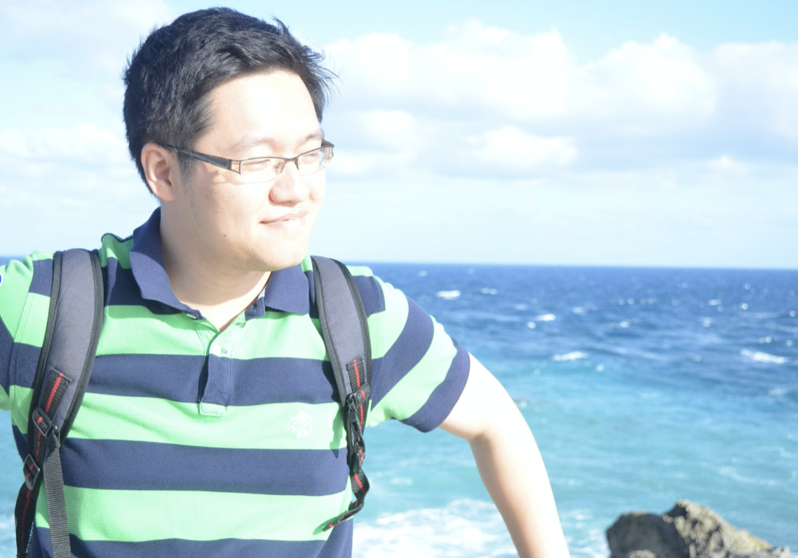
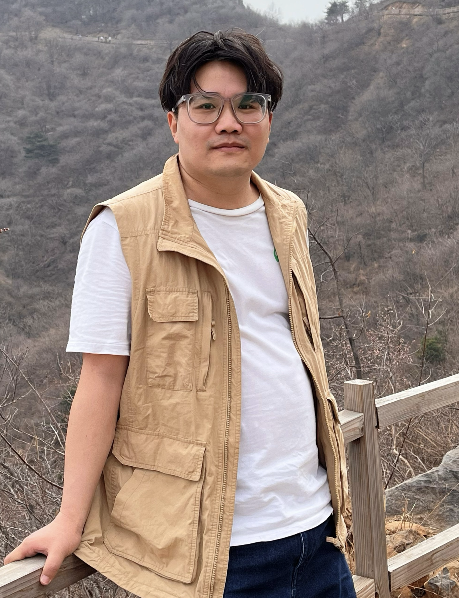
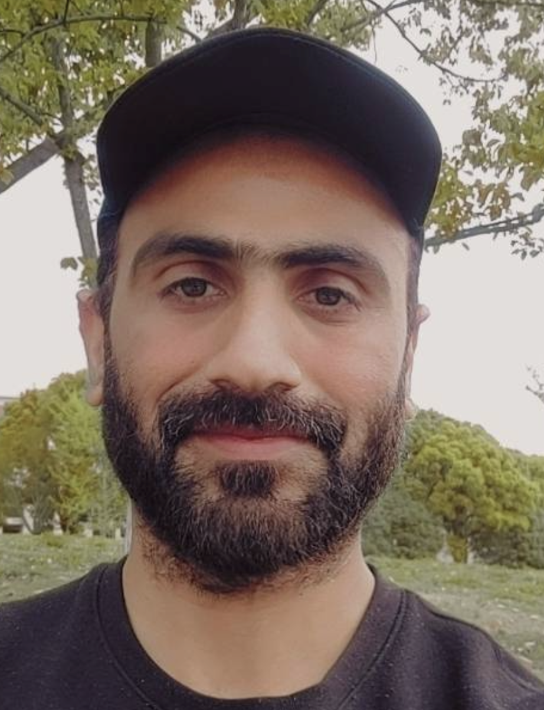
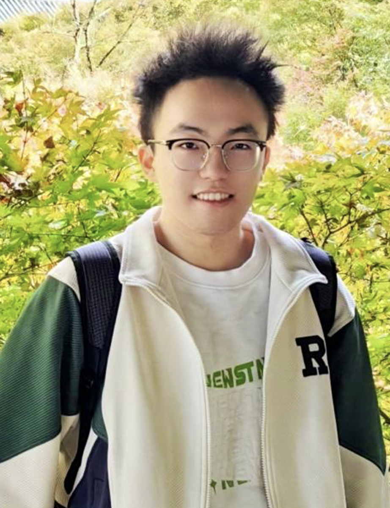
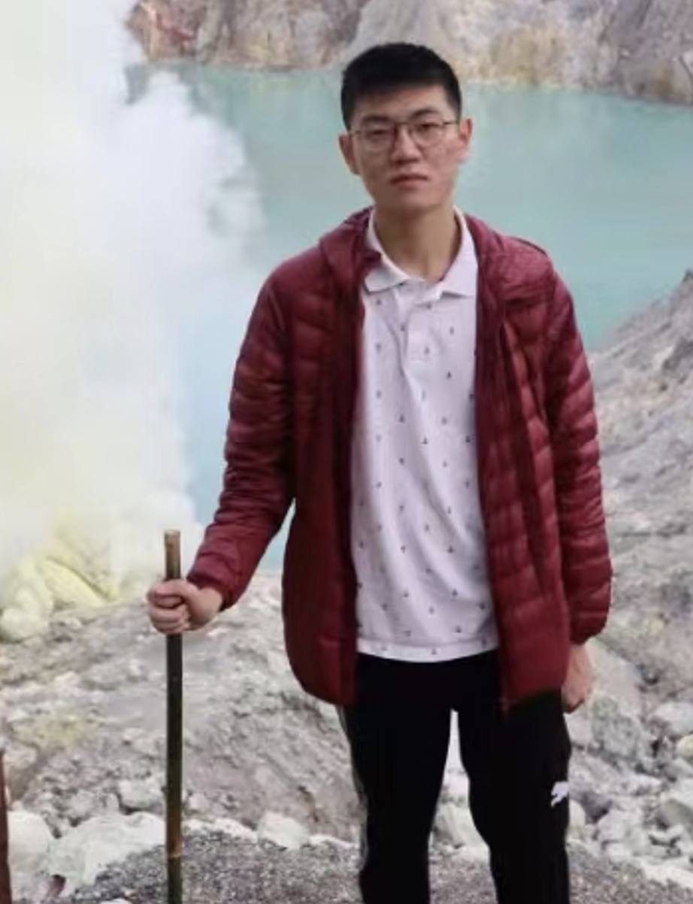
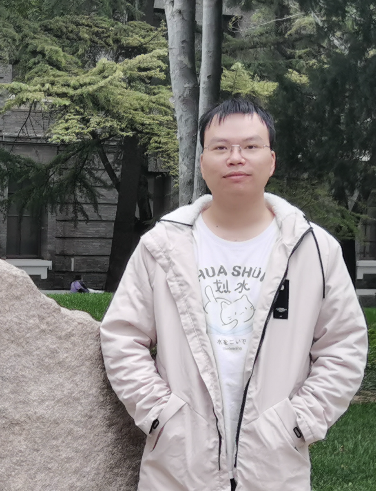

Members（团队成员）
Principle Investigator: Dr. Yuan Jing （袁兢） Google Scholar CV

I am an associate professor in the department of hydraulic engineering at Tsinghua University. My broad research interests cover from revealing fundamentals of geophysical flows in coastal regions to solving coastal engineering problems with advanced modelling techniques in fluid mechanics. I am deeply fascinated by the rigorous math in theoretical fluid mechanics and attracted by the advance techniques and beautiful results in experimental fluid mechanics. Things are more interesting if my research can either reveal the fundamental physics of the nature or create practical value for engineering applications. I like to combine any research methods to study an interesting topic, rather than finding a topic that suits a certain research method. A key challenge in coastal engineering is that the problem often involves multiple spatial and temporal scales, and usually the small-scale physics determines the large-scale phenomenon. My research follows the philosophy that one should first investigate small-scale physics and then use the scientific understanding to derive simple-yet-realistic models for large-scale applications.
Post-Doc Research Fellow
 Dr. Wei Zheng （韦征）
2022-current
I graduated from China University of Mining and Technology (Beijing) with a PhD in Civil engineering. My research focuses on the mechanical characteristics of monopiles in offshore wind power and the deformation response of shield tunnels. The primary research topics are: (1) Numerical modeling and evolution characteristics of the ultimate horizontal bearing capacity of offshore wind power monopiles under scour conditions, (2) Deformation response and theory of shield tunnels, (3) Mechanisms of interaction between pile foundations and surrounding soil.
我博士毕业于中国矿业大学(北京)市政工程专业，目前为清华大学水利水电系博士后，主要从事海上风电单桩力学特性和盾构隧道变形响应的科研工作。
 Dr. Mohsin Abbas
I obtained my PhD in groundwater hydrology from Shanghai Jiaotong University. My research interest is the effect of urbanization on groundwater quanlity and quantity. I’m currently a post-doc fellow working on the impact of climate change and sea level rise on the groundwater of mega coastal city. I choose Karachi, the capital of my homeland, as the research target.
Graduate Student
 Dong Yiyong (董毅勇）
2022-current
I completed my undergraduate studies at Tianjin University and I'm now pursuing my PhD degree at Tsinghua University. I'm originally from Taiyuan in Shanxi. My PhD work is mainly about CFD simulations, with a focus on numerical analysis of floating structures. This includes studying the forces and motion response of floating porous structures under wave-current interactions, as well as simulating the motion response and power generation of integrated floating wind turbines under wind-wave-current conditions. Additionally, I have a keen interest in artificial intelligence and have worked on a few machine learning projects. In my free time, I enjoy staying active with fitness and frisbee. I love trying new foods, travelling, and immersing myself in nature.
我在天津大学完成了本科阶段的学习，目前正在清华大学攻读博士学位。我来自山西太原。我的博士研究主要是关于计算流体力学（CFD）模拟，重点是漂浮结构的数值分析，包括漂浮多孔结构在波流相互作用下的运动响应，以及模拟浮式风电在风浪流条件下的运动响应和发电。此外，我对人工智能有浓厚的兴趣，并参与了一些机器学习项目。在空闲时间，我喜欢通过健身和飞盘保持活跃。我喜欢尝试新食品、旅行。
Gao Yuan (高源）
2023-current
I’m a PhD student working on numerical modeling of flow-structure interaction problems in the ocean engineering domain, such as flow through artificial reefs, wave-flexible-structure interaction, and accelerating CFD simulation using neural operator etc. I’m from Jinan, Shandong. I obtained my master degree from Huanan University of Science and Technology, and my master program was on anti-impact structures, which have negative Poisson's ratio characteristics. I have a wide range of hobbies and interests, such as traveling, photography, board games, and trying new things. I was invited to the Shenghai (盛汉) club.
我的博士研究主要为复杂流固耦合问题的高仿真模拟，包括人工鱼礁的孔隙流动及冲刷、波浪-柔性结构物相互作用，采用神经算子方法加速CFD。我来自山东济南，2022年于华南理工大学获得硕士学位，主要研究具有负泊松比特性的抗冲击结构。我有广泛的爱好和兴趣，如旅行、摄影、桌游和尝试新事物，被邀请加入盛汉俱乐部。
 Li Han (李晗）
2024-current
I graduated with a bachelor's degree from Tsinghua University, Weiyang College, and I am from Huzhou, Zhejiang. My main research focus is on CFD and floating structures, and I am also skilled at tinkering with experimental devices. I hope to pursue a rigorous mathematical foundation, coding skills and visualization of simulations, and I am currently getting started with OpenFOAM. I like to explore good desserts over the world, I also have intermittent enthusiasm for exercise (mainly swimming and running), and I am a video game enthusiast (preferring strategy, exploration, and narrative elements). My part-time dream is to become a master of hand-drawing.
本科毕业于清华大学未央书院，浙江湖州人。主要研究方向为CFD和漂浮式结构物，同时也擅长捣鼓实验装置。希望追求严谨的数学基础、可靠的代码架构与惊艳的视觉效果，当前入门OpenFoam中。日常甜食重度依赖症、间歇性运动热情（游泳、跑步为主）、电子游戏爱好者（偏向策略、探索、剧情要素），业余梦想是成为一名手绘大佬。
 Luo Kaiqing (罗开清）
2023-current
I obtaind my bachelor degree from Hydraulic engineering department of Tsinghua. I'm currently pursing my master degree, and my research topic is porous floating breakwater (design and mooring). I'm from Guizhou Province of China, and I often explore Guizhou food in Beijing with my friends. I also likes to play board games.
我本科毕业于清华大学水利系，目前是硕士研究生在读。我主要的研究内容是漂浮式孔隙防波堤的构型以及锚系设计，探索不同防波堤结构的可行性。作为贵州人，我时不时也会和朋友一起寻找处于北京的贵州菜色，平常会和朋友一起出门探索五道口附近的美食，不过更多的休息时间还是喜欢和朋友约个活动室一起玩玩桌游。
Ji Yiheng (季以恒）
Expected to join in 2025.9
I'm pursing my undergraduate degree in applied mechanics and hydraulic engineering at Tsinghua University, Xingjian College. I'm a year-4 student working on my final-year project, which is on floating porous breakwater. I'll continune to pursue my PhD degree in 2025.09 in Dr. Yuan's group. I am from Heze, Shandong. My hobbies include football, poetry, and I hope to contribute to the field of coastal engineering in the future.
我本科就读于清华大学行健书院，研究生将在清华大学水利系，山东菏泽人，爱好是足球、诗歌等，未来希望能在海岸工程领域做出贡献.
Currently hiring Post-doc or PhD student. Please email PI at yuanj2021@gmail.com or yuanj2021@mail.tsinghua.edu.cn.